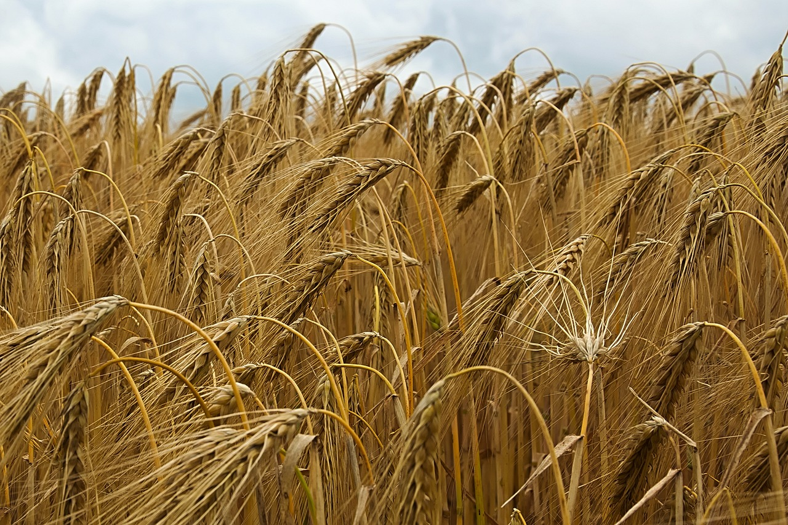
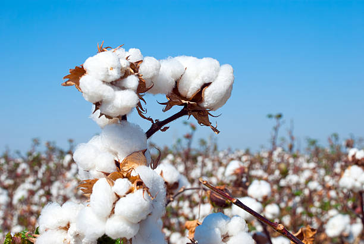

Присоединится в
ОНЛАЙН ЧАТОписание сайта
Сайт "Злаковые культуры в Казахстане" представляет собой важный онлайн-ресурс, посвященный исследованию, выращиванию и применению злаковых культур в сельском хозяйстве Казахстана. Мы стремимся стать надежным источником информации для сельхозпроизводителей, агрономов, студентов и всех заинтересованных лиц, которые интересуются этой важной отраслью сельского хозяйства. Сайт разработан при поддержке Казахского национального аграрного исследовательского университета!
Казахский национальный аграрный университет - высшее учебное заведение в Алма-Ате. Главной целью исследовательского университета является интеграция науки и производства, подготовка высококвалифицированных кадров через участие в фундаментальных и прикладных научных исследованиях и научно-технических проектах. Обучения ведётся на следующих факультетах: агробиологии и фитосанитарии; технологии и биоресурсов; ветеринарии; лесных, земельных ресурсов и плодоовощеводства; гидротехники, мелиорации и бизнеса; инженерный.
Цели сайта
-

Образование и информирование населения
Предоставление надежного и актуального источника информации о злаковых культурах, их свойствах, особенностях выращивания и использования в различных отраслях сельского хозяйства.
-
Поддержка сельхоз производителей
Предоставление руководств, советов и ресурсов для повышения эффективности выращивания злаковых культур в условиях Казахстана.
-
Содействие развитию отрасли
Содействие распространению передовых технологий и практик в выращивании и использовании злаковых культур с целью улучшения качества и урожайности.
-
Продвижение здорового образа жизни
Популяризация злаковых культур как важного источника пищевых продуктов, богатых питательными веществами, способствующих здоровому питанию и благополучию населения.
Целевая аудитория
Целевая группа, целевая аудитория — термин, используемый в маркетинге или рекламе для обозначения группы людей, объединённых общими признаками, или объединённой ради какой-либо цели или задачи. Под общими признаками могут пониматься любые характеристики, требуемые организаторами.
Наш сайт предназначен для:
- Сельскохозяйственных производителей, которые занимаются выращиванием злаковых культур или интересуются этим направлением.
- Агрономов и специалистов в области сельского хозяйства, которые ищут информацию о современных технологиях и методах выращивания.
- Студентов и ученых, которые изучают злаковые культуры и сельскохозяйственные науки.
Все, кто интересуется здоровым образом жизни и хочет узнать больше о преимуществах злаковых культур в питании и кормлении.
Здесь вы можете посмотреть видео про злаки в Казахстане
Также можете посмотреть другие видео про растения
Интересные факты
Здесь собраны некоторые интересные факты о злаках. Например а вы знали что существуют тысячи сортов пшеницы, и классификация их довольно сложна, однако главных типов всего два - твердые и мягкие.
-

Пшеница — первая культура, которую люди стали искусственно выращивать. Селекцией пшеницы впервые занимались жители Китая и Месопотамии.
-

Ячмень считается самой скороспелой зерновой культурой, так как период его вегетации составляет всего 62 дня.
-

Хлопок хорошо впитывает жидкость. Хлопчатобумажная ткань может впитать жидкости до 27 раз больше своего веса, что делает одежду из хлопка особенно удобной, потому что она поглощает пот.
-

В рисе много калия, полезного для сердечно-сосудистой системы. Есть так же кальций, йод, железо, цинк, фосфор. В рисе нет глютена — белка, вызывающего аллергическую реакцию.